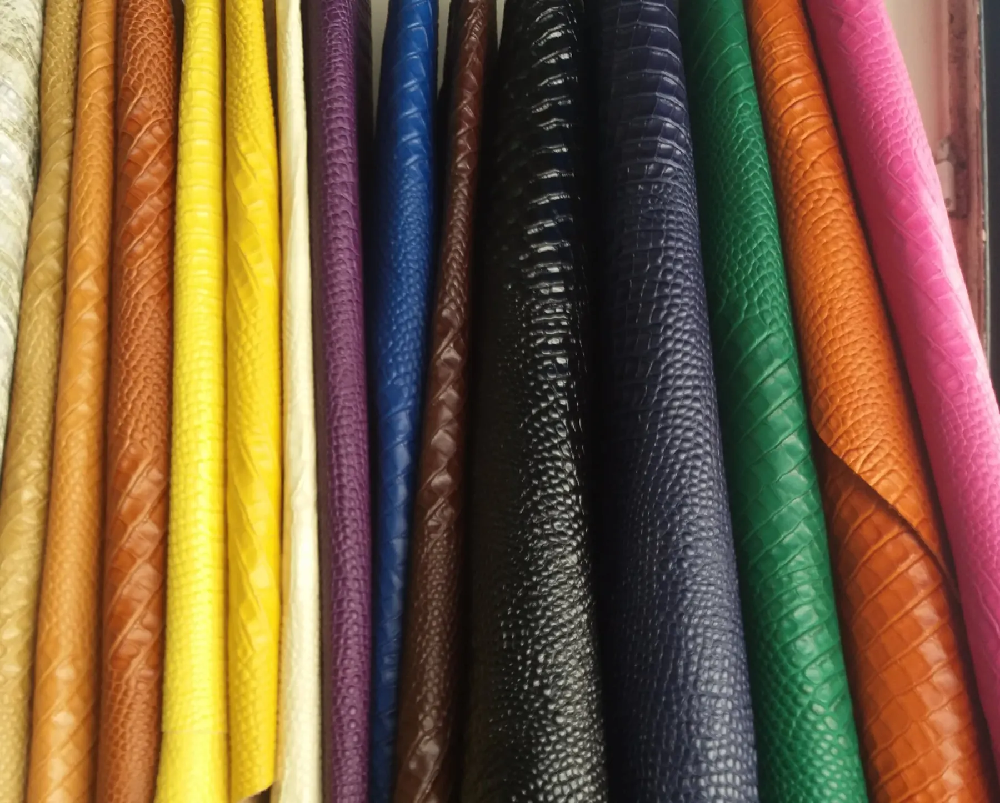
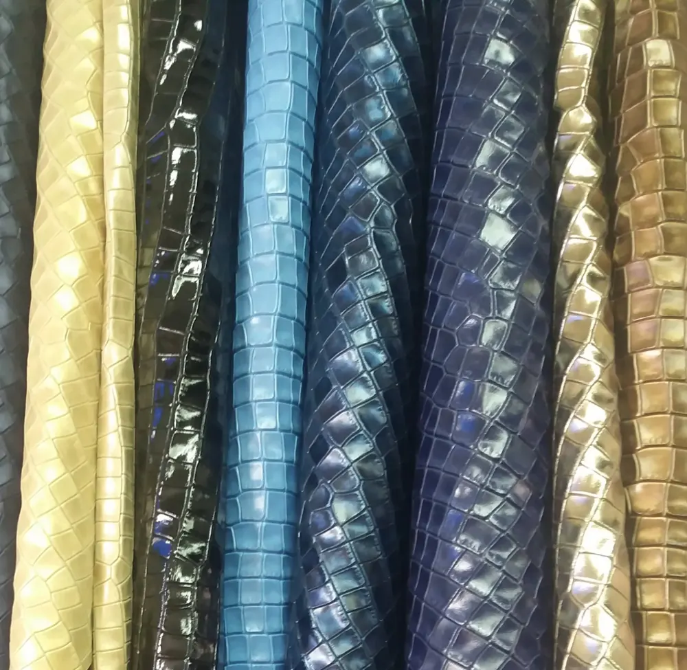
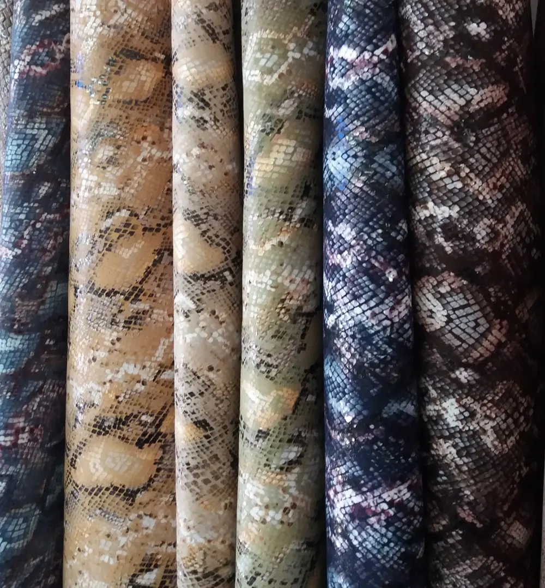
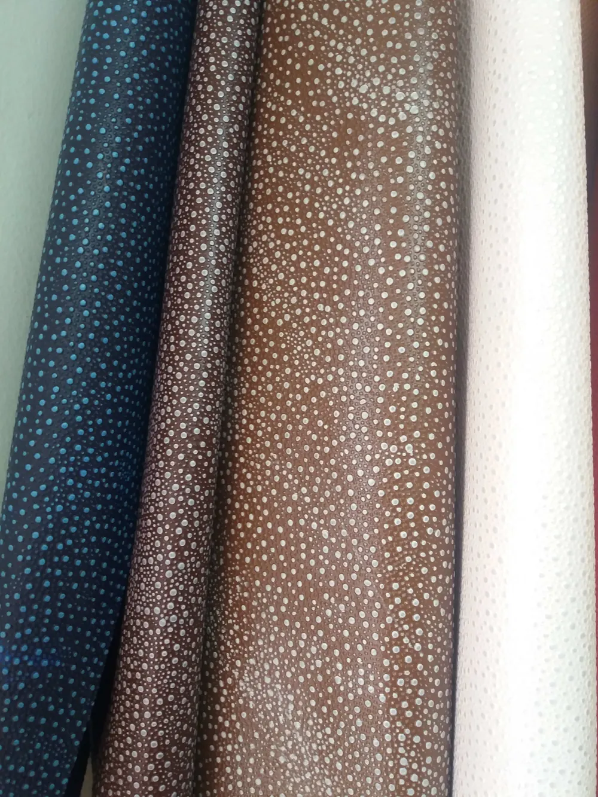
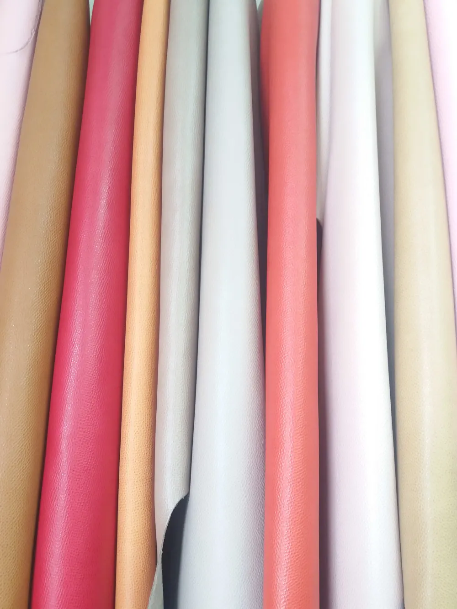
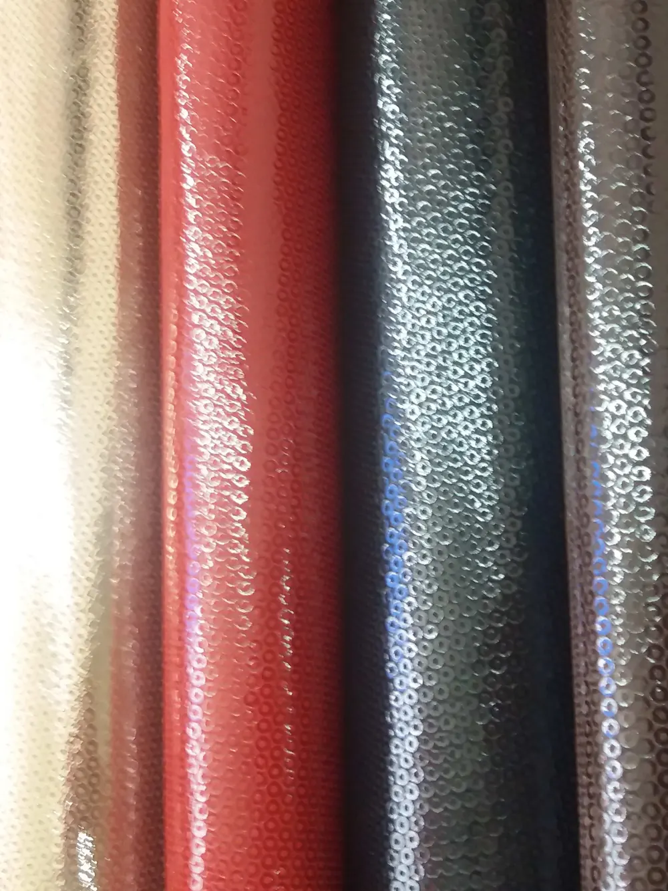
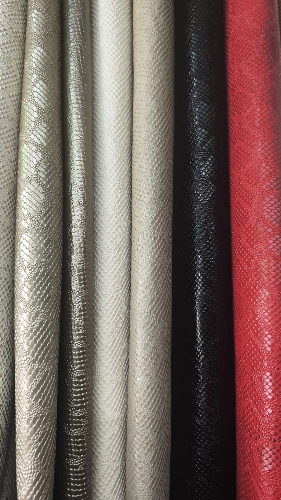
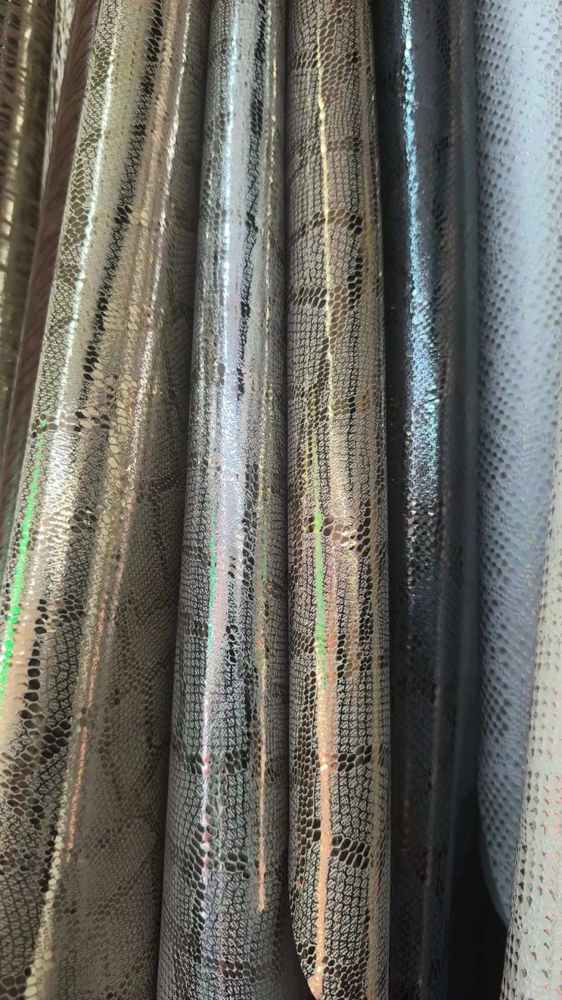
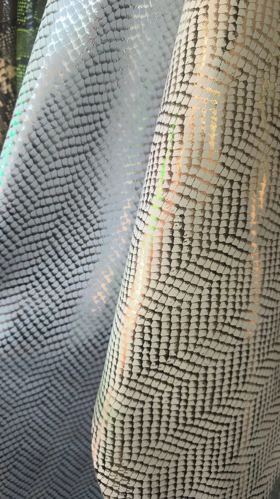
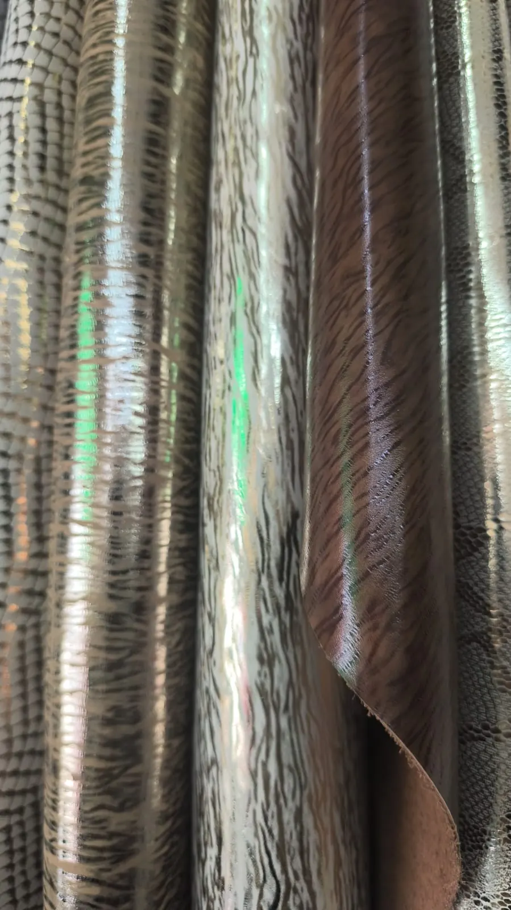

Grabado cocodrilo
Relieve tipo cocodrilo en acabado mate y semibrillante, de tonos tierra a colores vivos.
Para bolsos, billeteras y calzado
Peletería en el centro de Cali. Grabados, charol, napas y metalizados para bolsos, correas y calzado, más los insumos para la confección.
Calle 17 # 8A-13, barrio Sucre, Cali
Los colores cambian con cada llegada a bodega. Pase el mouse sobre una foto para ver la textura de cerca. Toque "Pedir fotos" y le enviamos por WhatsApp lo que hay disponible hoy.

Relieve tipo cocodrilo en acabado mate y semibrillante, de tonos tierra a colores vivos.
Para bolsos, billeteras y calzado

El mismo grabado con acabado de alto brillo, en azules, negro, dorado y bronce.
Para bolsos de fiesta, calzado y accesorios

Estampado tipo pitón en tonos tierra, grises y azules.
Para bolsos, correas y calzado

Relieve de puntos tipo galuchat en azul, marrón, coñac y blanco.
Para billeteras, correas y detalles

Cuero suave de grano fino en camel, rojo, durazno, gris, coral, rosa y beige.
Para bolsos, prendas y forros finos

Acabado metálico con textura de lentejuela en plata, rojo, negro y gris.
Para calzado de fiesta, bolsos y apliques

Grabado serpiente de escama marcada, mate o con brillo, en neutros, negro y rojo.
Para bolsos, calzado y correas

Serpiente con folia metalizada y reflejo tornasol en plata, oro rosa y grafito.
Para calzado de fiesta, bolsos y sandalias

Escama pequeña en zigzag sobre fondo claro, con reflejo tornasol.
Para bolsos, billeteras y calzado

Veta atigrada con folia de alto brillo en plata, champaña y chocolate.
Para bolsos de fiesta, calzado y accesorios
En bodega hay más. Si busca un material que no aparece aquí, pregúntenos.
Preguntar por un materialMire el muestrario o venga a la tienda a tocar el cuero.
Por WhatsApp le enviamos fotos de los colores disponibles y le confirmamos el precio.
Pase por la Calle 17 # 8A-13 o coordinamos el envío a su ciudad.
Bolsos, billeteras, correas y accesorios, con grabados y colores para cada temporada.
Cortes, forros e insumos para la producción de zapatos.
Cuero para muebles y proyectos de tapizado.
Le ayudamos a elegir el material según su producto y su presupuesto.
Venga con la idea del producto. Salga con el cuero, el color y los insumos.
Asesoría sin costo. Le decimos qué cuero aguanta el uso que usted necesita.
Envíos a todo el país. Si no está en Cali, coordinamos el envío por WhatsApp.
En el corredor del cuero. Estamos en la Calle 17 del barrio Sucre, donde Cali compra cuero.
Todo lo relacionado con la fabricación de bolsos, correas, calzado e insumos para la confección.